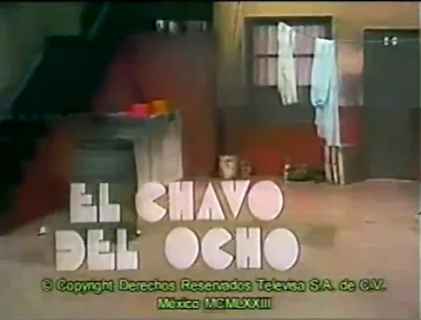
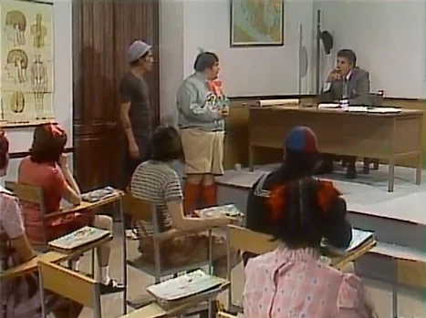
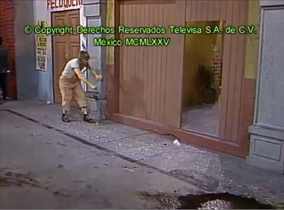
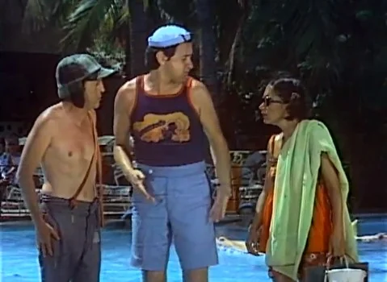
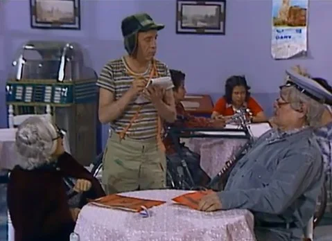

História do Seriado Chaves
Chaves (El Chavo del Ocho) é uma série humorística mexicana criada por Roberto Gómez Bolaños. Foi produzida e transmitida, inicialmente, pela Televisión Independiente de México (TV TIM), no canal 8. Sua origem ocorre após Rubén Aguirre receber significativas propostas de trabalho e deixar o programa Chespirito, culminando com o fim do quadro Los Chifladitos. A trama gira em torno de um menino órfão chamado Chaves (interpretado pelo criador da série) e sua convivência com os moradores da vila em que habita. Antes de tornar-se um programa independente, a série fazia parte da primeira versão do programa Chespirito, tendo suas primeiras exibições no ano de 1972. Os esquetes (peças de curta duração) exibidos eram acompanhados pelos outros quadros pertencentes ao programa, possuindo duração superior a 5 minutos. As principais características dos personagens não estavam consolidadas e seriam desenvolvidas ao longo das temporadas posteriores.

No ano de 1973, após a Televisión Independiente de México fundir-se com o Telesistema Mexicano, convertendo-se na atual Televisa, Chaves conquista seu programa independente e o programa Chespirito é encerrado. O elenco é mantido pela Televisa e Rubén é contratado para interpretar o Professor Girafales. Ao longo da temporada, inicia-se um maior desenvolvimento de algumas das principais características dos personagens. A produção apresenta melhorias e são introduzidas novas câmeras da GE. A série passa a ser transmitida em diversos países da América Latina e alcança o primeiro lugar de audiência, marcando o início da trajetória de expansão do seu êxito. No fim do mesmo ano, María Antonieta de las Nieves afasta-se da série. Posteriormente, passou a apresentar o programa de variedades Pampa Pipiltzin, após receber proposta da TV Azteca.

Imediatamente após a saída de María Antonieta, surgem importantes mudanças. Carlos Villagrán, intérprete de Quico, passa a ter maior destaque. Florinda Meza assume provisoriamente a função de locutora das aberturas, posto ocupado por María Antonieta desde o início da série. A função seria ocupada, em seguida, por Jorge Gutierrez Zamora, que continuaria narrando as aberturas até 1979. Em 1974, a série segue com grandes novidades. Novos personagens são introduzidos, como Nhonho (interpretado por Edgar Vivar), Pópis (interpretada por Florinda Meza), Godinez (interpretado por Horacio Gómez Bolaños), Malicha (interpretada por María Luisa Alcalá), Elizabeth (interpretada por Martha Zavaleta) e Cândida (interpretada por Ángel Roldan). É criada a escola do Professor Girafales. Para suprir a ausência de Chiquinha, personagens como Nhonho, Pópis e Malicha ganham destaque em alguns episódios. O prêmio El Heraldo de México é entregue no mesmo ano, como forma de reconhecimento ao trabalho realizado desde o ano anterior.

O ano de 1975 marca o retorno de María Antonieta de las Nieves ao elenco e a continuidade de significativas mudanças. As vestimentas dos personagens ganham melhor definição. A abertura do programa passa a ser padronizada, com representações fixas dos personagens. O episódio “Chiquinha, o terror do cortiço” caracteriza o retorno da personagem interpretada por María Antonieta, restaurando o elenco inicial do programa. A produção apresenta uma notável evolução, com melhorias na cenografia e imagem. A entrada da vila é ampliada e perde sua arcada. O chão, que nas temporadas anteriores pertencia ao próprio estúdio, adquire piso especial. No mesmo ano, a audiência da série oscilava entre 55 e 60 pontos no México.

A partir de 1976, a série apresenta um expressivo aumento no número de regravações e alguns episódios regravados passam a ter maior duração. O estilo de atuação do elenco e as principais características dos personagens tornam-se consolidados. O cenário ganha melhor iluminação. A escola do Professor Girafales adquire maior presença. No auge da popularidade, em 1977, o elenco realiza turnês por vários países da América Latina, representando os personagens para o público em cada evento. São gravados em Acapulco alguns dos episódios mais famosos da série, com várias cenas sendo gravadas no até então Hotel Acapulco Continental. A utilização de clipes musicais aumenta consideravelmente. A produção alcança um excelente nível, mantendo seu progresso qualitativo. Novas câmeras da Sony já estavam sendo utilizadas. O cenário é retocado e as casas adquirem melhor definição.
O ano de 1978 apresenta a continuidade do sucesso comercial da série, característico das temporadas anteriores. As turnês internacionais ainda eram intensas. O fim da temporada é marcado pelo início de expressivas baixas. Carlos Villagrán decide seguir carreira solo, devido à popularidade de seu personagem. Enrique Segoviano encerra seu ciclo como diretor. O cargo seria ocupado, em seguida, pelo próprio criador da série.

No início da temporada de 1979, após a saída de Carlos Villagrán do elenco, Ramón Valdés também decide deixar a série. Para solucionar a ausência de Quico e Seu Madruga, Bolaños introduz mudanças. Um novo cenário é criado: o restaurante de Dona Florinda. Dona Neves (interpretada por María Antonieta de las Nieves) é inserida na série em caráter definitivo, passando a morar na vila com sua bisneta, Chiquinha. A personagem já havia aparecido anteriormente em flashback no episódio O despejo do Seu Madruga, do ano de 1977. Ocorre também a criação do personagem Jaiminho, o carteiro (interpretado por Raúl “Chato” Padilla). Novas câmeras da RCA são introduzidas. Posteriormente, o programa é cancelado, apesar dos índices de audiência satisfatórios. É o fim do período considerado clássico. O último episódio inédito exibido no programa independente foi Antes um tanque funcionando que uma lavadora encrencada.
Em 1980, inicia-se o novo período do programa Chespirito. A série Chaves passa a ser um quadro do programa. Câmeras da Ikegami seriam introduzidas ao longo da década. Ramón Valdés retorna ao elenco em 1981, mas acaba retirando-se no fim do mesmo ano. No ano de 1982, Jaiminho passa a morar na vila e apresenta características similares às de Seu Madruga, tornando-se seu substituto. Com o passar dos anos, o grande número de regravações seria mantido. Os personagens sofrem mudanças no vestuário e a série ganha amplitude nos cenários.
A partir de 1987, o quadro Chaveco (Los Caquitos) passa a ter maior destaque e Chaves começa a perder sua importância no programa. Ao longo dos anos, alguns integrantes do elenco engordaram e envelheceram. A série passaria a ser ambientada mais vezes na escola.
O quadro ainda recuperaria parte de sua relevância no início da década seguinte. Em 1991, Florinda Meza atuaria na novela Milagro y Magia e não participaria de diversas gravações do programa Chespirito. Com sua ausência, Chaves volta a ter destaque.
No ano de 1992, em virtude do natural desgaste e das dificuldades enfrentadas por alguns integrantes do elenco com o passar dos anos, o quadro é encerrado. A série deixava de ser gravada definitivamente. O último quadro gravado foi